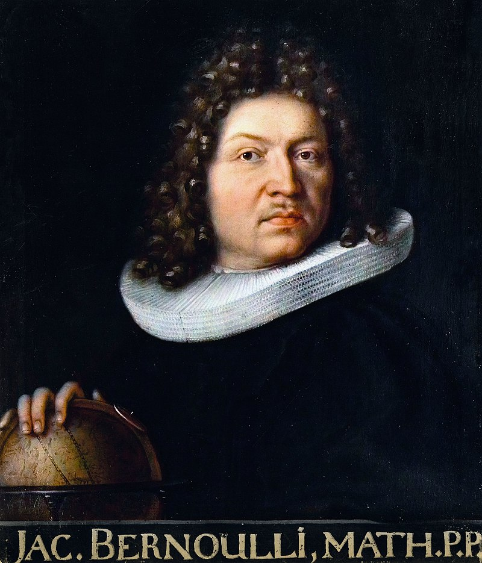

Quantitative analysis
Outline
Gaming chance
1 2 3 4
Gaming chance
- We may never know when humans started playing games of chance, but archaeological findings suggest it was a rather long time ago
- During the the First Dynasty in Egypt (c. 3500 B.C.) variants of a game involving astragali (small bones in the ankle of an animal) were already documented
- One of the chief games may have been the simple one of throwing four astragali together and noting which sides fell uppermost
Ālea iacta est
- The six-sided die we know today may have been obtained from the astragalus by grinding it down until it formed a rough cube
- Dice became common in the Ptolemaic dynasty (300 to 30 B.C.)
- There is evidence that dice were used for divination rites in this period - one carried the sacred symbols of Osiris, Horus, Isis, Nebhat, Hathor and Horhudet engraved on its six sides
- In Roman times, rule by divination attained great proportions; Emperors Septimius Severus (Emperor A.D. 193-211) and Diocletian (Emperor AD. 284-305) were notorious for their reliance on the
Fat chance
He threw four knucklebones on to the table and committed his hopes to the throw. If he threw well, particularly if he obtained the image of the goddess herself, no two showing the same number, he adored the goddess, and was in high hopes of gratifying his passion; if he threw badly, as usually happens, and got an unlucky combination, he called down imprecations on all Cnidos, and was as much overcome by grief as if he had suffered some personal loss.
— Lucian of Samosata (c. 125 – 180), writing in his trademark satirical style about a young man who fell in love with Praxiteles’s Aphrodite of Knidos; cited in F. N. David (1955:8)
Chance with limitations
- Dice were sometimes faked. Sometimes numbers were left off or duplicated; hollow dice have been found dating from Roman time
- Dice were also imperfect; a “fair” die was the exception rather than the rule
- Experiment by F. N. David using three dice from the British Museum:

Exercise
- Which of the three dice (if any) would you call “fair”?
- What distribution of outcomes would you expect 204 fair dice rolls to produce prior to seeing any results?
- How would you expect that distribution to change as the number of rolls progresses towards \(\infty\)?
- What name would you give to that distribution?
- verv
- rever
From chance to probability

- Until 18th century people had mostly used probability to solve problems about dice throwing and other games of chance
- Jacob (Jacques/James) Bernoulli (1654/1655-1705), a Swiss mathematician trained as a theologian and ordained as a minister of the Reformed church in Basel, began asking questions about probabilistic inference instead
- His work focused on the mathematics of uncertainty - what he came to call “stochastics” (from the Greek word \(στόχος\) [stókhos] meaning to “aim” or “guess’)
- Ars Conjectandi (The Art of Conjecturing) - published posthumously in 1713
Inferential questions
Suppose you are presented with a large urn full of tiny white and black pebbles, in a ratio that’s unknown to you. You begin selecting pebbles from the urn and recording their colors, black or white. How do you use these results to make a guess about the ratio of pebble colors in the urn as a whole?
- Bernoulli’s solution: if you take a large enough sample, you can be very sure, to within a small margin of absolute certainty, that the proportion of white pebbles you observe in the sample is close to the proportion of white pebbles in the urn.
- A first version of the Law of Large Numbers
Large numbers
Bernoulli’s solution, more technically:
For any given \(\epsilon\) > 0 and any \(s\) > 0, there is a sample size \(n\) such that, with \(w\) being the number of white pebbles counted in the sample and \(f\) being the true fraction of white pebbles in the urn, the probability of \(w/n\) falling between \(f − \epsilon\) and \(f + \epsilon\) is greater than \(1 − s\).the fraction \(w/n\) is the ratio of white to total pebbles we observe in our sample
\(\epsilon\) (epsilon) captures the fact that we may not see the true urn ratio exactly thanks to random variation in the sample; larger samples help assure that we get closer to the “true” value, but uncertainty always remains
\(s\) reflects just how sure we want to be; for example, set \(s\) = 0.01 and be 99% percent sure.
“moral certainty” as distinct from absolute certainty of the kind logical deduction provides